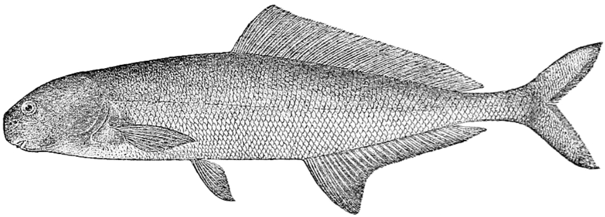

Systématique
- Ordre : Osteoglossiformes
- Famille : Mormyridae
- Genre : Myomyrus
- Espèce : M. macrops

Myomyrus macrops est un poisson électrique de la famille des Mormyridae, originaire des bassins fluviaux d'Afrique centrale. Décrit par Boulenger en 1890, il se distingue des autres membres de son genre par la taille proportionnellement plus importante de ses globes oculaires, d'où son épithète spécifique macrops (grands yeux).
Cette espèce atteint une taille moyenne comprise entre 15 et 20 cm. Son corps est allongé, comprimé latéralement, avec un profil dorsal légèrement convexe. La tête est caractérisée par un museau court et arrondi. Sa livrée est sobre, variant du gris argenté au brun violacé, avec des reflets métalliques selon l'incidence de la lumière. Comme ses congénères, il possède un organe électrique capable de générer des décharges de faible voltage pour l'électrolocalisation et la communication interspécifique.
Bien que ses yeux soient plus développés que chez d'autres Mormyridés, sa vision reste secondaire par rapport à son sens électrique. La nageoire dorsale est courte et située très en arrière du corps, commençant bien après l'origine de la nageoire anale, qui est nettement plus longue.
Myomyrus macrops est une espèce benthique au mode de vie essentiellement nocturne ou crépusculaire. Il passe la journée dissimulé dans les zones encombrées de racines ou de débris végétaux. En aquarium, il se montre timide et nécessite de nombreuses cachettes pour se sentir en sécurité.
Il présente un comportement territorial envers les autres poissons électriques, les décharges de chaque individu pouvant interférer avec celles de ses voisins. En dehors de cette agressivité intraspécifique liée à la gestion de l'espace électrique, c'est un poisson pacifique qui ignore les autres colocataires non électriques. Il utilise son museau sensible pour fouiller continuellement le substrat à la recherche de nourriture.
Mode : Aucune information documentée sur la reproduction en captivité.
En milieu naturel, la reproduction semble liée au cycle des crues saisonnières. Les décharges électriques jouent un rôle prépondérant dans la reconnaissance des sexes et les parades nuptiales. On suppose que l'espèce pond sur substrat caché dans les zones inondées, mais les données scientifiques précises sur le développement des œufs et des larves de cette espèce spécifique font actuellement défaut.
Dimorphisme sexuel : Non documenté par des caractères externes visibles. Chez les espèces proches, une légère différence dans la forme de la nageoire anale ou dans la signature électrique peut être observée chez les sujets matures, mais aucune étude n'a validé ces traits pour M. macrops.
Espérance de vie : Probablement de 5 à 8 ans en aquarium, sous réserve de maintenir une qualité d'eau irréprochable.
L'espèce est principalement distribuée dans le bassin inférieur et moyen du fleuve Congo, ainsi que dans certains affluents comme le Kasaï. Elle affectionne les zones de rivières à courant modéré, où le fond est tapissé de sédiments fins, de sable et de matières organiques en décomposition.
Elle évolue dans des eaux douces et souvent acides, typiques des régions forestières africaines. Le biotope est généralement sombre, avec une canopée dense limitant la pénétration de la lumière, ce qui favorise l'utilisation de ses capacités sensorielles électriques.
Répartition

Origine naturelle :
- Afrique : Bassin du Congo.
- Pays : République Démocratique du Congo, République du Congo.
- Localisation : Fleuve Congo et ses principaux affluents.
Considérée comme "Préoccupation mineure" (LC) par l'UICN, bien que localement dépendante de la préservation de la qualité des eaux fluviales.
Paramètres de maintenance
Température : 23 à 26 °C.
pH : 6,0 à 7,0.
GH : 2 à 8 °dGH.
Courant : Modéré ; oxygénation importante requise.
Volume conseillé : Minimum 300 litres pour un individu. Le bac doit posséder un substrat de sable doux (non abrasif) pour protéger les barbillons et les zones sensorielles buccales.
Régime alimentaire
Régime : Carnivore insectivore.
Se nourrit de larves d'insectes aquatiques, de petits vers et de micro-crustacés fouisseurs.
En aquarium, il privilégie les nourritures vivantes ou congelées (vers de vase, artémias). Il est souvent nécessaire de le nourrir après l'extinction des lumières pour éviter que des poissons plus vifs ne consomment sa part.